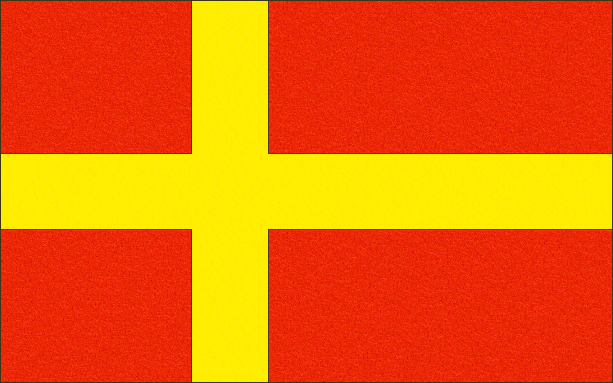

Etusivulle
EtusivulleRistiliput
Ristiliput olivat yleisiä sortokausien aikaan, etenkin punakeltaisissa väreissä. Ristiä suosittiin etenkin heidän parissaan jotka halusivat painottaa Suomen yhteyttä pohjoismaihin. Aamulehti kirjoitti 04.05.1906 sinivalkoisista lipuista jotka olivat käytössä siihen aikaan:
- vaakasuoraan jaettu lippu, jossa walkoinen on ylä- ja sininen alapuolella;
- yhdenkertainen sininen risti walkealla pohjalla, ja
- valkea risti sinisellä pohjalla.

Vuoden 1905 suurlakon jälkeen, kun venäläistämistoimet hellittivät väliaikaisesti, eräs lukija ihmetteli Uusi-Suometar lehdessä mikä oli suomalaisen liputuksen tilanne ja ehdotti Suomen lipuksi siniristilippua.
» Kuinka mahtaa olla Suomen lipun laita? Saako nyt vapaasti Suomen väreja liputellen käyttää? Olisi hauskaa jos siinäkin asiassa päästäisiin yksimielisyyteen. Puolestani esittäisin Suomen lipuksi sinisen ristin valkealla pohjalla. Niin olisi Pohjan kansoilla risti liehuen erivärisenä. Olisi saatava oikeus Suomen kauppalaivoille ainakin Venäjän Kauppalipun ohella käyttää tuota kaunista sinivalkeata ristilippua.» [lähde]
Vuoden 1912 olympialaisissa suomalaiset naisurheilijat olivat kantaneet oman urheiluseuransa lippua, joka oli johtanut selkkaukseen venäläisten viranomaisten kanssa. Tähän liittyen nimimerkki "Flagg-vän" puolsi Åbo Underrättelser -lehdessä Suomen lipuksi punakeltaista ristilippua. Kirjoittaja tarkensi piirroksella lipun mitoiksi 16:10, jossa ristin leveys olisi 2 yksikköä.
» Olympialaisten avajaisseremoniassa stadionilla tapahtunut skandaali, jossa naisten voimisteluliiton lippu
jouduttiin poistamaan, on jälleen kerran kiinnittänyt huomiota lippuasiaan. Meillä on nimittäin lippukiellosta
ja häirinnästä huolimatta lippukysymys, emmekä saa unohtaa sitä. Lippu on symboli jolla voi olla suurenmoista
merkitystä. Stadionkilpailut ovat todella osoittaneet sen - kun kansakunta oli voittanut,
kuinka ylpeänä ja tunteella voittaja ja hänen maanmiehensä näkivät lippunsa liehuvan korkealla.
Kaikki -
paitsi suomalaiset....
Meidän värimme ovat - ja tästä tuskin voi olla erimielisyyttä - punainen ja keltainen. Suomen lippumme pitäisi
siis olla punainen ja keltainen - ja niin se onkin. Siellä missä maamme lippu nostetaan ylhäällä, se saa loistaa
punakeltaisena, muistuttaen vaakunamme kultaista leijonaa punaisessa kentässä.
Mutta yksi asia ei näytä olevan selvä, nimittäin kysymys siitä, miten lipun pitäisi edustaa punaista ja
keltaista. Näkee mitä erilaisimpia yhdistelmiä, aina lipusta, jossa keltainen on ylhäällä ja punainen
alhaalla, kelta-punaisiin raidallisiin lippuihin, joiden kulmassa on vaakuna tai ei. Varsin usein nähdään
yhdistelmä, jota on pidettävä ainoana oikeana: lippu, jossa on keltainen risti punaisessa kentässä.
Vain mittasuhteet vaihtelevat, ja ne ovat usein kaikkea muuta kuin oikeat. »
[lähde]
Pekkalan kartanon lippu
Ruovedellä sijaitsevalla Pekkalan kartanolla oli käytössä 1900-luvun vaihteessa ristilippu jossa keltapunaiset kaksoisristit
olivat keltaisella taustalla ja keskelle oli asetettu leijonavaakuna. Gallen-Kallela on mahdollisesti kyseisen lipun
suunnittelija. Hän, ja kartanon silloinen omistaja nuorsuomalainen valtiopäivämies Alexander Aminoff, olivat
nuoruudenystäviä ja Gallen-Kallela myös vietti kartanolla paljon aikaa. Lippu myös mahdollisesti inspiroi hänen
vuoden 1918 lippuluonnoksia. [Kiljunen 2018: 117-118].

Muita sortokauden ristilippuja


 Ylös
Ylös